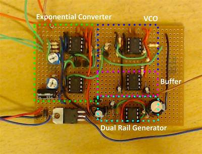

2016-09-15 - Nº 72

Editorial
Esta é a Newsletter Nº 72 que se apresenta com o mesmo formato que as anteriores. Se gostar da Newsletter partilhe-a!
Todas as Newsletters encontram-se indexadas no link.
Esta Newsletter tem os seguintes tópicos:
Esta semana a União Europeia anunciou que tenciona disponibilizar Wi-fi grátis nos espaços públicos, a todos os cidadãos do espaço europeu num prazo de 5 anos. A Nissan fez o anuncio que está a considerar usar InteligÊncia Artificial para o desenho dos seus novos veículos. A GlobalFoundries vai passar a disponibilizar a tecnologia de fabrico FinFET de 7nm. Foi anunciado esta semana um Kit IoT que permite usar a Google Cloud Platform. A Maxim Integrated disponibilizou um novo dispositivo que permite melhorar a captação de energia solar em 30%. A Resenas vai adquirir a Intersil. A Baidu vai começar a fazer testes dos seus veículos sem condutor na Califórnia.
Na Newsletter desta semana apresentamos diversos projetos de maker assim como alguns modelos 3D que poderão ser úteis.
 João Alves ([email protected])
João Alves ([email protected])
O conteúdo da Newsletter encontra-se sob a licença  Creative Commons Attribution-NonCommercial-ShareAlike 4.0 International License.
Creative Commons Attribution-NonCommercial-ShareAlike 4.0 International License.
Novidades da Semana ^
European Union pledges free Wi-Fi for all citizens by 2020
_"Following the annual State of the Union Address this week, the European Commission has announced plans to bring free Wi-Fi in public spaces by 2020. We propose today to equip every European village and every city with free wireless internet access around the main centres of public life by 2020, said European Union president Jean-Claude Juncker." [...]
Nissan Considering Using AI to Design Cars
"Nissan Motor Co Ltd started to consider designing cars by using artificial intelligence (AI). "We have once used AI to design a car," said Tetsurou Ueda of Nissan Research Center at a symposium that took place in Tokyo Aug 31, 2016. "Though it is still in the test phase, we feel that there is a possibility of commercialization." Similarities among cars are extracted by using AI to recognize many images. As a result, it becomes possible to crease "something like a car." In the experiment, the AI created "crushed" and "folded" cars in many cases, but it also output a car image that had never been seen in the past. For the future, Nissan plans to make improvements to the AI so that it can design specific types of cars such as sport cars, minivans, compact cars, etc. Though the AI does not replace designers at this point, it can stimulate the activities of designers, the company said." [...]
GLOBALFOUNDRIES to Deliver Industrys Leading-Performance Offering of 7nm FinFET Technology
"GLOBALFOUNDRIES today announced plans to deliver a new leading-edge 7nm FinFET semiconductor technology that will offer the ultimate in performance for the next era of computing applications. This technology provides more processing power for data centers, networking, premium mobile processors, and deep learning applications. GLOBALFOUNDRIES new 7nm FinFET technology is expected to deliver more than twice the logic density and a 30 percent performance boost compared to todays 16/14nm foundry FinFET offerings. The platform is based on an industry-standard FinFET transistor architecture and optical lithography, with EUV compatibility at key levels. This approach will accelerate the production ramp through significant re-use of tools and processes from the companys 14nm FinFET technology, which is currently in volume production at its Fab 8 campus in Saratoga County, N.Y. GLOBALFOUNDRIES plans to make an additional mutli-billion dollar investment in Fab 8 to enable development and production for 7nm FinFET." [...]
Outras Notícias
- Prototyping kit gets your IoT app on Google Cloud Platform, fast
- Solar Panels Gain 30 Additional Power with Maxims Cell-String Optimizer
- Renesas to Acquire Intersil to Create the Worlds Leading Embedded Solution Provider
- TI unveils first ultra-low power dual-band wireless MCU in production
- Baidu receives approval from California DMV to test self-driving cars
- STMicroelectronics Empowers Wireless IoT-Device Developers with New LoRa Kit Leveraging STM32 Microcontroller Ecosystem
Modelos 3D ^
Com a disponibilidade de ferramentas que permitem dar azo a nossa imaginação na criação de peças 3D e espaços como o thingiverse para as publicar, esta rubrica apresenta alguns modelos selecionados que poderão ser úteis.
Micro Catapult
"Inspired by a Stratasys sample print, I decided to re-draw and improve the desktop, micro catapult. It can throw a small bit of paper, chunks of raft, and pretty much anything you can fit inside. Selected ammunition can be thrown around 2 metres, plenty to hit unaware victims at another desk! It's a Print-In-Place model, without the need for any support material. It also takes advantage of the material properties, meaning that there are no external parts or hardware, it's just the material that allows it to flex and store energy. I was pleasantly surprised to find that the ABS/PC I printed it in doesn't break or retain a memory from being fired over 100 times." [...]
Customizable tray V2
"This is a new version of what used to be the customizable part of this thing: http://www.thingiverse.com/thing:1702685 It is a tray that can be customized for a lot of uses. It includes options for holes or not, special ventilation fins for soaps and an optional customizable tube mount that lets you click it on to any tube between 6 and 40 mm. So go ahead and make your perfect soap tray, a beer holder for your camping chair, a perforated drip plate or a simple but perfectly sized box." [...]
Customizable propeller / fan
"A customizable propeller or fan. You can adjust the amount of blades, length, shaft hole size and more. The blade angle is 45 degrees so it will print without support on most printers. Use a brim if you print very thin blades." [...]
Hinge Variations
"Reusable parameterized hinges. The hinges are designed with an additive and a subtractive part, making it easy to combine with other design elements. This is the same hinge design I used on my Pop Box (http://www.thingiverse.com/thing:248387). The file hingePairBase.scad is the main design file. All the other SCAD files are small variations from the base and are named with the parameter they tweak. Modify the SCAD to suit. When using the hinges, bear in mind that the hinge has a top and a bottom. Keep the plate material on the left to ensure that the subtractive parts are correctly oriented. For example, this means that if you were to lay the hinges around a polygon, one per side, you would need to make them go bottom to top in an anticlockwise direction to keep the polygon material on the left. The pin for the hinges is filament. Try various filaments you have to find which one works best for the inside diameter you print with. I find that my glow in the dark PLA fits well in a 2.06mm inside diameter hole, but red ABS needs to be sanded down slightly. The hinge sides with the lower hingelet count are made slighly larger than those with a higher hingelet count. This is make one side grip and one side rotate smoothly. I printed all of these in PLA at 0.2mm layer height on a Replicator 1." [...]
Projetos Maker ^
Diversos Projetos interessantes.
ToyRAP 28BYJ-48 Motor Based RepRap
"ToyRAP is a new project which is based on 28BYJ-48 stepper motor making it extremely cheap, it can be built for some 75 euro. It is aimed at education and demonstration purposes." [...]
Split Flap Display
"More and more, we're communicating with 3-letter abbreviations. BRB, LOL, WTF, etc. Smart phones, although convenient, are also adding to our disconnection from objects as things made by humans. This Split Flap Display brings text and animation back to its mechanical roots. By pushing the buttons, you cycle through all the letters of the alphabet to spell out your thoughts in acronym form, and the last frame is an animation of the very first cat video (by Eadweard Muybridge). Why use high-resolution, multi-functional devices when you can get back to your industrial revolution roots?" [...]
Four-channel voltmeter with analog display
"In this article we will try to improve the draft four-channel voltmeter output on the Nokia 5110 . The voltmeter is able to measure four channels and the result will be displayed in the form of an analog slider. Measurement range is from 0 to 5 V. Involvement is no different from the previous , we will only improve the program. Instead of four three bed numbers will only show two-digit numbers, remove the display of information that do not need all that and focus on rendering the test voltage through analog scale. These will show very schematically shows a voltage to, for example, at the time of dynamically changing." [...]
KeyPi - A cheap portable Raspberry Pi 3 Laptop under $80
"I always wanted to make a cheap portable Raspberry Pi computer. There are many Pi Laptops out there but they rarely feature a full-size keyboard with such a form factor. Pardon my sub-par DIY skills and I hope you like this project!" [...]
Simplest High Frequency PWM with NE555
"In this instructable I will show you how I made a high frequency Pulse Width Modulator with the well known integrated circuit NE555. This circuit is a good starting point in electronics for beginners because of the low amount of parts. It can be used to regulate computer fans, LEDs, motors and many more." [...]
esp8266 Configurable Power Management
"Since the start of getting going with esp8266 boards in late 2015 Ive had in the back of my mind the idea of how nice it would be to develop a little device that is free of all ties to a regular plug-in-the-wall power supply. With no plug in supply, were talking about battery power and if the goal of this project is complete independence then were talking rechargeable battery power. If this dream was a reality then the idea is that the device could go anywhere and be positioned anywhere, within WiFi range. I kept this idea bubbling in the background whilst building out other more general features of my custom web based ESP firmware and a few months ago I started gathering bits and pieces from aliexpress and eBay to form the basis of a prototyped custom rechargeable battery solar power supply." [...]
DIY CNC For 60$ (Large Work Area)
"Hi there I've been here after a long time, and this time I've made a huge project as compared to my earlier ones. This is a full-sized 250 mm X 300 mm work area CNC machine and more interesting things is that it was made in 60$ only. I got some time in my summer vacations and this time I thought to make something apart from my daily work,I can say that it is a fully functional prototype. It is a full version of a CNC. I failed many times during this build but at the end I got precise CNC machine. In the following steps you may notice two different versions of it actually the larger one doesn't work properly so I made smaller one with work area of 25 cm X 30 cm. This is my longest instructable ever I am going to mention each and every thing I faced and did during the building time. I can easily see many mini CNC's on this website made from old floppy drives and CD ROMs. First of all I thought to make a mini version of this CNC but due to a little difference between the cost of mini and full versions I decided to go with this one." [...]

Making Your Own Infrared Controller With Arduino
"Have a robot that would benefit from a customized controller? Tiny remotes not doing your project justice? Maybe your project would benefit from the use of joysticks instead of itty bitty buttons? In this instructable, we will be making our own Infrared Controller with two joysticks, two face buttons, and two trigger buttons that you can use to control just about anything with an infrared receiver! Let's get going!" [...]
Magnetic Field Strength Measurement using Arduino
"In this project we are using the concept of ADC (Analog to Digital Conversion) in ARDUINO UNO. We are going to use a Hall Effect sensor and Arduino uno to measure the field strength of a magnet. The sensor which we have used here is UGN3503U. This is a hall sensor which senses the magnetic field strength and provides a varying voltage at output proportional to the field strength. This sensor picks up field strength in the units of GAUSS." [...]
Automatic Room Light Controller with Bidirectional Visitor Counter
"Often we see visitor counters at stadium, mall, offices, class rooms etc. How they count the people and turn ON or OFF the light when nobody is inside? Today we are here with automatic room light controller project with bidirectional visitor counter by using Arduino Uno. It is very interesting project for hobbyists and students for fun as well as learning." [...]
7 Segment LED Based SPI Display using 74HC595
"Single Digit Big Display module using 74HC595 IC project will display large size 7 segment single digit number. 3.5inch height, which can be visible over large distance. More digit can be connected serially to each other easily trough connector. This circuit is a single digit seven segment big display using a set of 5 LEDs per segment and a shift register for easy control by micro-controller input. Each of the LEDs used in this project are 5mm high glow type." [...]
DIY SPEEDOMETER AND ODOMETER
"Hey guys, this a instructable of how to make a bike speedometer.Yeah,you read it right the one that we use in car but only for 10$ .Well the first this for you to know is that this is the collaborated project of Mr_DIY_Electrician and paurushthemaker .So back to topic our project is all about a speedometer which has 3 modes as follow:- Speedometer(for speed) and odometer(for distance); Task1.-Cover 20 miles; Task2-Achieve 30mph speed" [...]
Arduino Sunflower - an Electronic Sundancer
"Maker is always sensitive to the new and funny things. One day, I watched a video, in which the sunflower moves along with the sun. I had a sudden insight then. Why can't I make a electronic device inmitating this biomechanism. In the following days, I began to carry out my solar tracker project. I selected the crowtail as the microcontroller board, and picked up the componets and accessories in our warehouse. Then, I assembled these parts together. At last, I tested with the led on my phone. You know what, it worked perfectly. I was so excited and posted the demo video on the social media. I was surprised that many people liked and shared this video, and some of them even sent me messages saying that they want to make this projects too. So I redid this projects and make a specific tutorial to let more people make this project. Here we go." [...]
Tiny Lisp Computer
"This article describes a self-contained computer with its own display and keyboard, based on an ATmega328, that you can program in Lisp. You can use it to run programs that interface to components such as LEDs and push-buttons via the I/O pins, read the analogue inputs, and operate external devices via the I2C and SPI interfaces. It has a small monochrome OLED display that gives 8 lines of 21 characters per line, and a miniature PS/2 keyboard." [...]
CO2, Temperature and Humidity Monitor
"CO2 Monitoring is mandatory in many workplaces and it affects two of my clients directly in Barrel Halls where wine is stored and aged in temperature and environmentally controlled areas. The table below shows the affects of various concentrations in the air." [...]
Raspberry Pi AY-3-8910
"This is not the most original project, but working on my Apple II KSP project got me thinking about ancient sound cards, specifically the Mockingboard Sound available on old Apple IIs. These boards used the AY-3-8910/1/2 sound chips, which can generate 3 channels of square waves with other effects. They were commonly used in some Spectrum and Atari computers, among other places. There is/was quite a scene about generating chiptunes for these chips. So the goal of this project is to have a Raspberry Pi play YM chiptune files onto an actual AY-3-8910 along with some fun LED visualization." [...]
DIY | RGB LED Shades Controlled By Arduino
"Today I'm going to teach you how you can build your own RGB LED Glasses very easily and cheap. This has always been one of my biggest dreams and it finally came true! A huge shout out to EasyEDA for the amazing PCB's and personal support! :)" [...]
Pharos LED Headpiece
"This project was a commission by Christian Joy Costumes. She wanted to add LEDs to a colorful headpiece to go with the grass skirt and fuzzy shoes for Childish Gambino's Pharos concert series. I happily soldered up this circuit on top of a headband she created." [...]

DIY Synth Series Part 1 The Exponential VCO
"Todays music is mostly made using computer software to master tracks, add instrumentals, mix songs, manipulate sounds and much more but how do they use to make music? Music used to be done entirely with REAL instruments such as guitars and pianos but synthetic sounds have made their mark on the musical scene, as well. A great band to look at for an example is Kraftwerk, which in the 1970s used synthesizers to create all their sounds from the aggressive sawtooths to the gentle beep and boop of a computer. These synthesizers (unlike most ones you will find today) were all analogue which means that, instead of relying on software and processors, the sound generation was done by manipulating electrical signals against time. How does an old fashion synthesizer work? This series of projects will show how all the different parts in a synthesizer work and how to build your own modules. In this project, we will be building the heart of the synthesizer, the VCO (voltage-controlled oscillator), which takes in analogue voltages and generates the raw sounds ready to be further processed by filters, modulators, ADSR modules, and step sequences." [...]
Bidirectional control of 4 DC motors using ATtiny Microcontroller and L293D
"This is an Instructable on controlling DC motors using ATMEL ATtiny2313 micro controller and L293D motor controller chip. In this Instructable we will learn to control the rotational direction of up to 4 DC motors using ATtiny2313 chip. ATtiny2313 is a cheap ATMEL AVR micro controller with 2KB ISP flash memory, 128 Bytes ISP EEPROM, 128 Bytes internal SRAM. The chip is available in an easy to use 20 pin DIP package making it ideal for hobbyists." [...]
Arduino Controlled Phone Dock With Lamps
"The idea was simple enough; create a phone charging dock that would turn on a lamp only when the phone was charging. However, as is often the case, things that seem initially simple can end up getting a bit more complex in their execution. This is the story of how I created a dual phone charging dock that accomplishes my simple task." [...]
Outdoor Thermometer / Hygrometer
"The placstic outdoor thermometer has gone with the wind some day. The double sided scotch became too weak on the sunlight to hold the thermometer on the window. Today anyone can look for the current weather conditions and forecast in the Internet, but sometimes the simple outdoor thermometer is more convenient. And the people that likes the arduino controller colld build own outdoor sensor! The algorithm of the thermometer is very simple. It has no menu or buttons, only display and sensors. Watchdog timer wakes up every 8 seconds, every 5-th time the information from the sensors read and print on the display. The external sensor installed to the small box to keep it dry in case of the rain. The external sensor is small and heats not much on the direct sunlight." [...]
HELPMAN CLOCK
"HELPMAN CLOCK is a new medical device that measures heart rate and controls the state of assumption of your pills or insulin. It stores all data on an online database, tells you when it is the time to take your pills and automatically ejects them" [...]
Home Control 2016
"Sick of reading about other peoples home control? Want to make your own? Got some electronics and software experience? Youre going to LOVE THIS! Rock-solid home control low cost, DIY. If youve read my early blogs youll know that Aidan Ruff and I have been working in home control since the 20th century. Together, we ran an electronics R&D company for many years and one of our products was a home control system called APPCON. That range of products achieved much coverage in the UK tech press at the time and many loved it but the design involved spouse-unfriendly WIRES bad mistake. So now were back this time for fun with a vengeance!" [...]
Musical Shoes
"This project is a fun way to create beats while hitting the dance floor. It's also a great beginner level project that uses Arduino, bluetooth, and soft conductive fabric switches. A few months back I came across an easy way to trigger sound files while being able to choose and change the sounds on a whim. I combined this with my love of making musical interfaces to create a fun and easy project to share. How do they work? There are three soft switches made of conductive fabric on the bottom of each shoe that are connected to an Adafruit Feather Bluefruit 32u4 board. The board is programmed to be recognized as a bluetooth keyboard so whenever a switch is closed it's read as a keystroke. For example, when a switch closes it's the same as the "n" key getting hit on the computer's keyboard. These keystrokes are mapped to sound files using a piece of free software called Soundplant. The shoes wirelessly connect through bluetooth and each time you tap a toe or click a heel a sound file will play from the computer. Connect a bluetooth speaker to the computer to get louder and better sound!" [...]
Adding ADC to Microcontrollers without ADC
"I recently had the need to carefully measure a voltage with a microcontroller which lacks an analog-to-digital converter (ADC), and I hacked together a quick and dirty method to do just this using a comparator, two transistors, and a few passives. The purpose of this project is to make a crystal oven controller at absolute minimal cost with minimal complexity. Absolute voltage accuracy is not of high concern (i.e., holding temperature to 50.00 C) but precision is the primary goal (i.e., hold it within 0.01 C of an arbitrary target I set somewhere around 50 C). Voltage measurement is usually a balance of a few factors: precision, accuracy, cost, simplicity, and speed. The method I demonstrate here maximizes precision and simplicity while minimizing cost. High speed operation is not of interest (1-2 measurements per second is fine), and as mentioned before accuracy is not a chief concern as long as precision is maximized. I would feel neglectful if I didnt give a shout out to a few alternatives to this method: Using the 10-bit ADC built into most AVR microcontrollers (my go-to for ATMega328 at ATTiny85, but the ATTiny2313 doesnt have any) often combined with an op-amp like this, using an IC like the MCP3208 8-channel 12-bit ADC (very expensive at $3.66 on mouser) are a good option, and fancy alternative dual slope methods as described in this really good youtube video and even mentioned nicely in the digital volt meter (DVM) / LCD driver ICL1706 datasheet. Those addressed, my quick and dirty idea uses only a couple cents of components and 3 pins of a microcontroller. There is much room for improvement (see my notes about a 555 timer, voltage reference, and operational amplifiers at the bottom) but this is a good minimal case starting point. This type of measurement is perfect for high precision temperature measuring using things like an LM335, LM35, or thermistor." [...]
CARDBIRD - The cardboard robotic arm
"Build your own cardboard robotic arm in 2 hours. Lets RocknRoll!" [...]
Pixie: An Arduino Based NeoPixel Wristwatch
"Ever since the dawn of time, people have begun to dispense time. First was the sundial, later appeared water clock after them was the hourglass. Millennia later was created the first pendulum clock and few centuries later the electronic watch. Today I'll show you how to make Pixie, a wristwatch that combines both analog and digital clock technology with the precision of an atomic clock. PIXIE shows the hours in blue, the minutes in red andthe seconds in green, it also has a flashlight mode that is activated, by capacitive touch switch, for 10 seconds. You may ask why, that's because the LEDs heat-up and they might get damaged, but if you want, you can increase the time( at you own risk !)" [...]
Infinite Noise TRNG (True Random Number Generator)
"The Infinite Noise TRNG is a USB key hardware true random number generator. It uses what I call a "Modular Entropy Multiplier" architecture (previously Infinite Noise Multiplier or FireBug). Besides being simple, low-cost, and fast, it is much easier to get right than other TRNGs. It naturally defends against influence from outside signals, such as radio interference and power supply noise, making it simple to build securely, without requiring an expert in analog design. Modular entropy multipliers produce a provable and easily measured level of entropy based on thermal noise, approximately equal to log2(K) per output bit, where K is a gain between 1 and 2 set by two resistors around an op-amp. A "health monitor" can track this and verify that the output entropy is within the expected range, which for the Infinite Noise TRNG described below is within 2% of log2(1.82). Modular entropy multipliers are suitable for both board level implementation and ASIC implementation. Speed is limited by the speed of a gain stage and a comparator, and can run in excess of 100 Mbit/second per second with high performance components. Cheap solutions with CMOS quad op-amps can run at 8Mbit/second." [...]
DIY Buck Converter
"In this Instructables, I will show you How to step down DC voltage efficiently. for supplying power to Arduio or any other components required 5v or 3.3v. If you use LM7805 it having poor efficiency about 30%.It also heat up. If you use LM2576HV-ADJ it having decent efficiency up to 80%.It can also give adjustable voltage between 3-60 v by adjusting POT." [...]
ESP8266 based NTP Clock
"A little over a year ago, the ESP8266 WiFi SoC started getting attention and quickly became a little chip of wonder. On a fully self-contained breakout board with this chip, a complete WiFi enabled controller is well under $5! It's gathered huge interest from the hobbyist world. Since the device first made its appearance, I've been watching news on the evolution of its development environments. My play time is very limited at the moment, so I was very excited to learn that a standard C++/Arduino environment is available for this - rather than spending time learning a new SDK, I can just use already familiar environments. More time playing with it, less time stuffing around with compilers, etc." [...]

8 Channel Optically Isolated IO Board
"Opto-Isolated I/O Board offers a compact & convenient way to interface industrial type inputs/outputs to your microcontroller boards, Signal transmission between circuits of different potentials and impedances etc." [...]
That's all Folks!